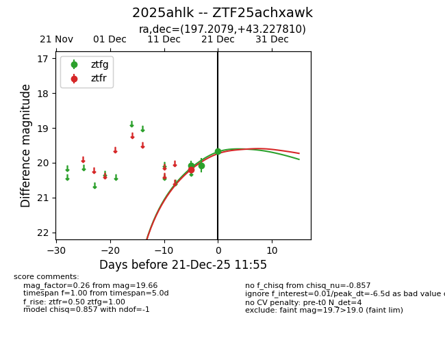
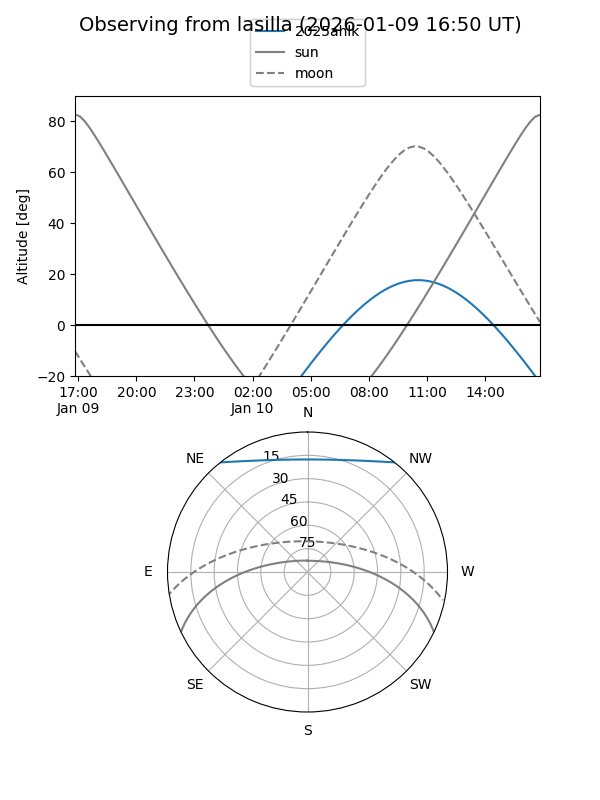
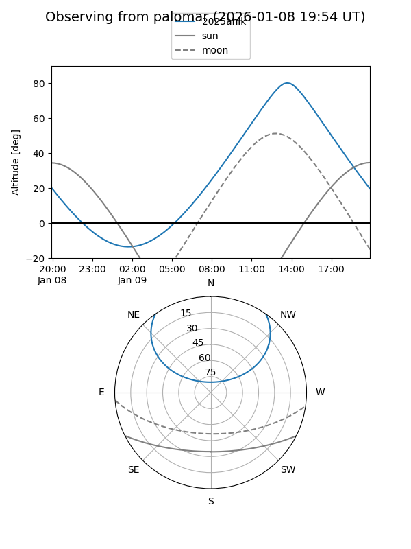
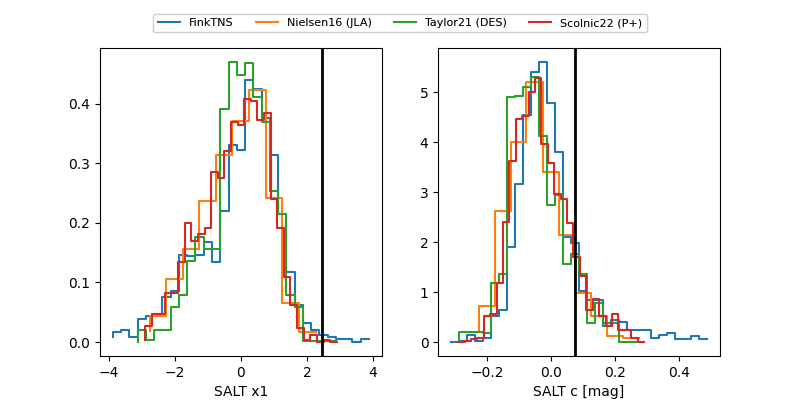

2025ahlk
Target 2025ahlk at 2025-12-21 14:07
Aliases and brokers:
FINK: fink-portal.org/ZTF25achxawk
Lasair: lasair-ztf.lsst.ac.uk/objects/ZTF25achxawk
ALeRCE: alerce.online/object/ZTF25achxawk
TNS: wis-tns.org/object/2025ahlk
YSE: ziggy.ucolick.org/yse/transient_detail/2025ahlk
alt names
ZTF25achxawk (ztf,fink_ztf)
2025ahlk (tns,yse)
Coordinates:
equatorial (ra, dec) = 197.2079,+43.22781
equatorial (HMS+DMS) = 13:08:49.89,+43:13:40.11
galactic (l, b) = (111.7025,+73.51915)
Flags:
Photometry:
last ztfg=19.91, ztfr=19.71
4 ztfg, 2 ztfr detections
Lightcurve

Visibility


Additional plots
